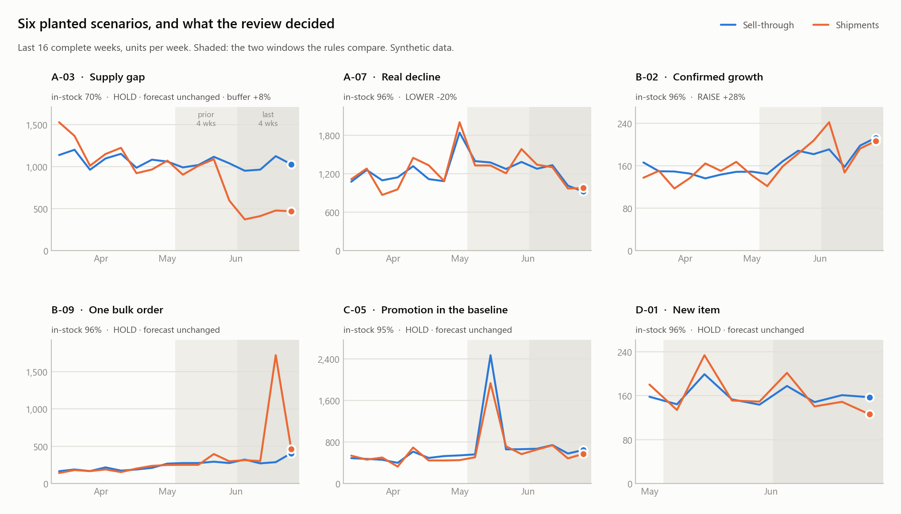
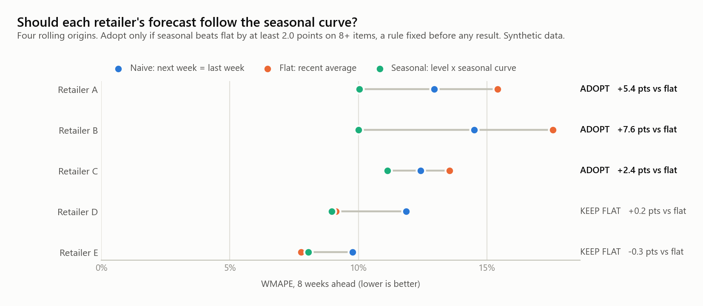
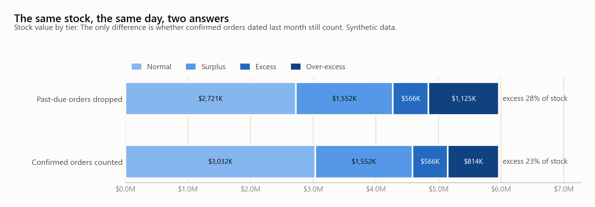
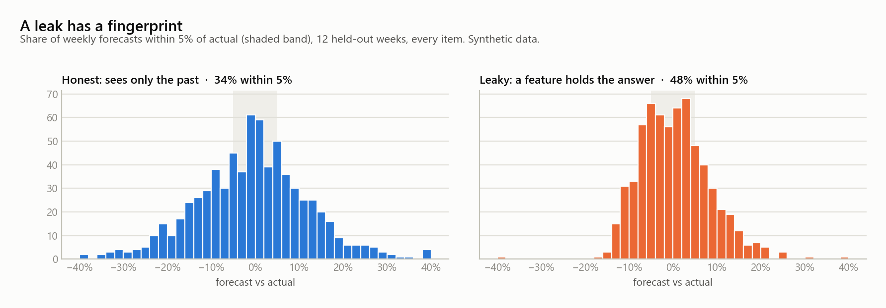

Jay Sejun SongSupply chain analytics & applied AICPG beauty · US / Canada / Europe
I am a demand planner who builds the forecasting systems I plan with.
In backtests on our eight major accounts, we nearly halved weighted forecast error, in a system that now reviews 20+. Since it went live, the share of sales orders backordered for planning reasons is down 36%.
I have planned demand at Kiss Beauty Group since January 2024. I started with six US and UK accounts, and today I cover 20+ retail accounts across the US, Canada and Europe, about 1,400 nail SKUs. I run the weekly review, and I co-built the system that runs it. My part was the agent architecture, the business rules and guardrails, the data integration, and the MCP server the agents run on.
Weighted forecast error, nearly halved in backtests. Fewer items ordered short, fewer ordered into a warehouse nobody was going to draw from.
Before · previous process35–45%
After · 2026 Q118–25%
0%20%40%60%
Drawn as ranges because it is a range: the spread across retailers. Collapsing it to a single number would read better and mean less.
How it was measured
WMAPE, volume-weighted by shipment units · Σ|actual − forecast| ÷ Σ|actual| · our eight major domestic accounts, by retailer · existing items · 2026 Q1, validated on a six-month rolling backtest · the range is the spread across retailers
1 region → 3
Every account in every region now reviewed weekly, filling a capacity gap without a new hire. The number I would defend hardest: it needs no denominator.
How it was measured
Review throughput ≈4× (monthly → weekly) · the US, Canada and Europe · Canada and Europe previously monthly or not reviewed
5 h → 2 h
Weekly forecast review, per account. The system proposes and defends a call on every item; a planner reviews the flagged ones.
How it was measured
≈60% less time per account review · ≈3,100 hrs/yr of capacity across the team (≈1.5 FTE): 3 hours a week × 20 accounts × 52 weeks · an estimate of what a weekly review of every account would have cost, since Canada and Europe were reviewed monthly or skipped before
−$26,517 / yr
The third-party forecasting platform we used to pay for is retired. Net of the in-house system that replaced it, recurring software cost fell 88%.
How it was measured
$30,117/yr license retired − $3,600/yr for the in-house system · a realized saving, not a modeled one
4 divisions
Handed to three other product divisions (lash, cosmetics and appliances); 15+ purchasing and supply chain users across all four now run it weekly on their own accounts. Each team changes its own rules in a plain-language file, so a new team goes live in days, not a rebuild.
How it was measured
nail, lash, cosmetics and appliances · I set up each team's environment, connected it to the team's own data, ran the training sessions and stayed until the team ran it on its own · 15+ is the combined size of the purchasing and supply chain teams that use it, not a login count
−36%
Planning-related backorders: the share of sales orders we could not fill for planning reasons, from January to October, before and after the system went live.
How it was measured
backordered order value tagged with planning or procurement reason codes ÷ all sales-order value · January–October 2025 against January–October 2026 · the system went live in January 2026 · procurement codes sit in the same measure, so I do not claim all of the drop
84% → 98%
On-time in-full on a retailer's own vendor scorecard, within six months, with late and short penalties down 31% year over year through the first quarter. Short stock went to complete orders in priority order, not split thin across all of them.
How it was measured
scored per purchase order by the retailer, not by us · allocation across 20+ retail accounts since Q3 2025 · unit fill rate was already about 99%, so the gain came from where short stock went, not from holding more · the same approach took a second major retailer's fill rate from the mid-80s to the high 90s and held it there for eight months · read next to excess and aging stock
Seasonalitystore-normalized index, shrunk toward the segment curvenew items: a vision model reads each item's color for a starting curve
Rule engine~30 guardrails · RAISE · LOWER · HOLD · OK · asymmetric caps
Investigatoran agent digs into each flagged item across every signal
Refutera separate agent told only to disprove the finding
Plannerreviews what survives, ~30 minutes, final call
→ the forecast file, as an input to S&OP · shaded: the two roles that decide what does not ship
Signals in, a seasonality layer, a rule engine with about thirty guardrails, an agent that investigates what the rules flag, and a second agent whose only instruction is to refute it. A planner reviews what survives, in roughly thirty minutes. The two ways a forecast can be wrong are not symmetric, so cutting and raising follow deliberately different rules.
The full write-up covers the architecture and the results. How I work covers the gate every change goes through. A clean-room version runs the same design on synthetic data, and every rule described on this site is one of its unit tests.
What the clean-room version produces · all of it on synthetic data

Six planted scenarios. A supply gap, a promotion sitting in the baseline, a bulk order, a new item. Each one tests a single rule, and the expected verdict is written down before the run.

A pre-registered backtest. The seasonal curve is adopted only where it beats flat by a margin fixed in advance — which is not everywhere.

The same stock, two answers. What one date rule does to reported excess, and why the report had to be rebuilt before anyone acted on it.

A leak has a fingerprint. How often a forecast lands within 5% of actual. A model that knows the answer is too accurate in a way honest models never are.
Run it yourself · six Jupyter notebooks, synthetic data
Weekly reviewsignals, rules, scouts, the refuter, the revised plan
Validationunit, backtest against naive, regression, shadow
A 60-helicopter contract under a delivery cap, a price ceiling and rising costs. A $10M investment that cut lead time from 40 to 30 months held return on sales at 15% instead of 12–13%, about $53M more profit. We also timed an advance purchase of the longest-lead part.
Now: the same lead-time-against-cost trade-off the freight mode selection rules settle on every line.
Next-day price for any U.S.-listed stock: one LSTM on market indicators, one on seven FRED macro series and scraped financial statements, stacked by an XGBoost meta-model.
Now: looking back, interpolating quarterly data leaked the future into the past. It is why I fit every transformation on training data only.
What moves pay and job satisfaction for data analysts, and which skills employers ask for: an IRB-approved survey (131 responses) plus Glassdoor and job-market data, tested with Kruskal–Wallis, Dunn's test and regression.
Now: choosing the test to fit the data, and deciding what counts as evidence before looking.
Supply Chain Analyst, Analytics & AI (Demand Planning Specialist) — Kiss Beauty Group, Inc.
Demand planning for 20+ retail accounts across the US, Canada and Europe. Co-built our agentic AI planning system, which nearly halved weighted forecast error in backtests. My part was the agent architecture, the business rules and guardrails, and the data integration. I also built the custom MCP server it runs on, with 30+ tools and 11 AI agents on our SAP and Snowflake data, which expanded planning capacity without added headcount. Since the system went live, the planning-related backorder rate is down 36%. It placed third of 24 teams in the company-wide AI Awards 2026, and 15+ people in four product divisions run it weekly. Separately, I lifted one retailer's on-time in-full from 84% to 98% by prioritizing complete fulfillment of high-priority orders under short supply, and set the company's first three-year aging cutoff for excess stock.
2024.01 — 2025.12
Junior Demand Planning Data Analyst — Kiss Beauty Group, Inc.
Calibrated monthly SKU-level forecasts for six US and UK retail accounts to confirmed door counts, store reset timing, in-stock rates and each retailer's order pattern. Worked with sales operations to size initial pipeline fills for 300+ new-item launches across those accounts' spring 2026 resets, flagging supply gaps before they reached the shelf. Built the automated freight mode selection that 15+ buyers in four divisions now run, automated stock checks for 15+ accounts with SAP macros and Python, and built a self-service Power BI order model that is still in use. Promoted to Demand Planning Specialist.
2023.05 — 2023.08
Undergraduate Research Assistant — Eberly College of Science, Penn State
A funded summer study of what moves analyst pay and what employers ask for: an IRB-approved survey (131 responses), job postings scraped in R, 600+ job descriptions text-mined for required skills, and a regression on pay. I chose the topic and presented the findings on a research poster as first author, supported by a faculty advisor (above).
2020.06 — 2021.12
Sergeant, communications — Republic of Korea Ministry of National Defense
Equipment readiness and maintenance scheduling.
2018.08 — 2023.12
B.S. Statistics — The Pennsylvania State University
Minors in Mathematics and Information Sciences & Technology.
Demand forecasting and forecast accuracy analysis · S&OP · CPFR · new product introduction (NPI) · allocation and replenishment planning · E&O and aging inventory · Python (pandas, NumPy) · SQL · Snowflake · SAP (MRP, sales orders, purchasing) · Power BI and DAX · time series forecasting and backtesting · agentic AI and multi-agent systems · R · Tableau · Excel